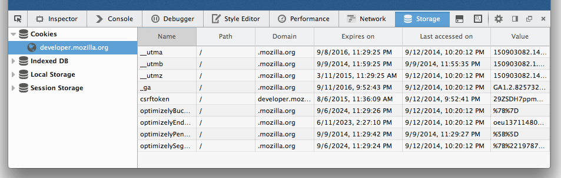
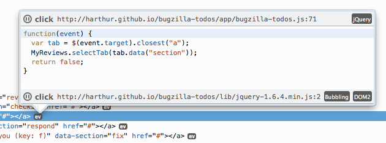
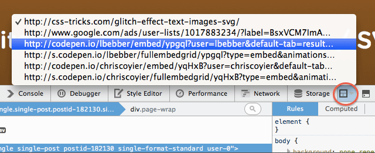
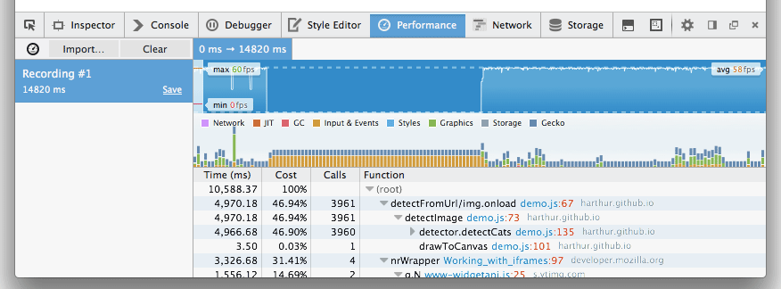
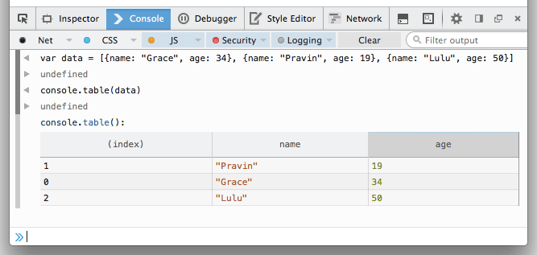
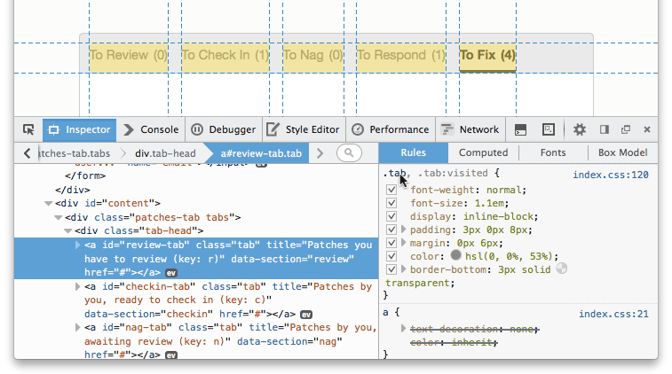

WebIDE、jQuery 事件、iframe 切換器、儲存空間檢測器，還有更多
新的 Firefox 開發者工具已經進入曙光版 (Aurora) 釋出頻道，並將正式登上 11 月的 Firefox 34 版本。其中包含新工具 (儲存空間檢測器、WebIDE)、更新過的效能分析器，亦強化了多項現有工具。

WebIDE
WebIDE 在此版本中預設為啟用狀態，可讓你在瀏覽器中開發 App。WebIDE 可透過範本建立新的 Firefox OS App (即為 Web App)，或可打開現成 App 的程式碼。你可於 WebIDE 上編輯 App 的檔案。且只要清點滑鼠，即可在模擬器中執行 App，亦可搭配開發者工具進行除錯。現在只要進入 Firefox 的「網頁開發者 (Web Developer)」功能表就能找到 WebIDE。(說明文件)
儲存空間檢測器 (Storage Inspector)
新的面板將顯示目前頁面以 cookies、localStorage、sessionStorage、IndexedDB 所儲存的資料。可從開發者工具中的「工具箱選項 (即齒輪圖示)」→「Default Developer Tools」→「Storage」，即可啟動 Storage 面板。此面板現仍是「唯讀」狀態，未來將開放編輯功能。(說明文件) (開發討論記錄) (他人在 UserVoice 提出的需求)

jQuery 事件
檢測器 (Inspector) 彈出視窗的事件監聽器 (Event Listener) 現已支援 jQuery。也就是說，彈出視窗會顯示你附掛的函式，例如 jQuery.on()，而不是 jQuery wrapper 函式本身。可參閱本篇文章進一步了解，並新增支援自己愛用的框架。(開發討論記錄)

iframe 切換器
新的頁框選單可變更你正除錯中的頁框。只要選擇一個頁框，就會切換所有工具以進行該 iframe 的除錯作業，包含檢測器、主控台 (Console)、除錯器 (Debugger)。找到「工具箱選項 (即齒輪圖示)」→「可用的工具箱按鈕 (Available Toolbox Buttons)」→「選擇要做為目標文件的 iframe (Select an iframe as the currently targeted document)」，就能新增框架選擇按鈕。(說明文件) (開發討論記錄)(他人在 UserVoice 提出的需求)

強化過的效能分析器 (Profiler)
新的 JavaScript 效能分析器 (Profiler)，將出現於新的「效能 (Performance)」分頁中 (之前分頁名為「效能分析器」)。新功能包含幀率 (Frame rate) 時間軸，還有如頁框的「network」與「graphics」分類。(說明文件) (開發討論記錄)

##
console.table()
在 JavaScript 中的任何一處呼叫 console.table()，即可透過表格呈現方式將資料輸出至主控台。可記錄任何物件、陣列、Map、Set。另外只要點擊表頭，即可重新排序表格內的欄位。(說明文件) (開發討論記錄)

選擇器預覽
在檢測器或樣式編輯器 (Style Editor) 中，只要將滑鼠游標移至 CSS 選擇器上，就會反白顯示目前頁面符合該選擇器的所有節點。(開發討論記錄)

其他功能
- 記憶前次工具的分割主控台 – 分割主控台 (按下 ESC 就會開啟) 現在會同時開啟最近一次使用的工具。(開發討論記錄)
- Web audio – AudioParam connections – 「Web Audio」編輯器現可顯示 AudioNodes 到 AudioParams 的連結。(開發討論記錄)
特別感謝為此版本撰寫所有功能與修正檔的四十一位貢獻者。
你可於下方直接填寫意見；到 Twitter 的 @FirefoxDevTools 提供反饋意見；或透過開發者工具意見反饋管道提出想法。如果你想貢獻自己的一份力，可參閱相關說明。